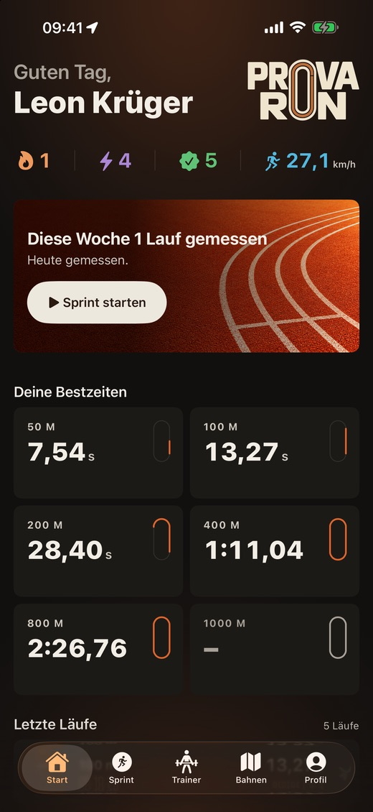

About Provarun
From a run of his own.
For your next one.
Know your time. Be able to check it in the video.
Paul Knutzen runs the 800 m and studies business information systems at Leuphana University Lüneburg.
He built Provarun alongside his studies. The idea came from his own training: time a run with an iPhone, then check the result in the video. That idea became the app.

Mentioned in DIE ZEIT

Issue 50 ·
„So eine App gab es noch nicht, also habe ich eine gebaut.“
Translated from German
“An app like this didn’t exist, so I built one.”
Er hat neben seinem Studium eine App namens ProvaRun entwickelt, mit der Läufer Sprints messen und speichern können.
Translated from German: Alongside his studies, he developed an app called ProvaRun that lets runners time and save their sprints.
DIE ZEIT, issue 50, 19 November 2026
Business · “Die Einhörner werden mehr”
Fabian Franke, Anja Stehle and Jens Tönnesmann
Provarun / Version 1.1
What the app
does today.

Provarun times runs from 50 to 800 m using video, with results displayed to a hundredth of a second. You choose the start and finish frame by frame. Videos, times and favourites stay locally on your iPhone. No account needed. The app uses external services for tracks, maps and Pro purchases.
Timing, video review, personal bests, warm-ups and stretching stay free. Pro adds a six-week training plan with target times based on your personal bests, plus recovery guidance on breathing, breaks, sleep and overload.
Annual subscription: one week free for eligible subscribers, then €29.99 a year. Renews automatically; cancel through the App Store.
Source: Provarun feature catalogue and product information, version 1.1. First released on 14 October 2026. Pro available since 22 November 2026.
Privacy policy (in German)